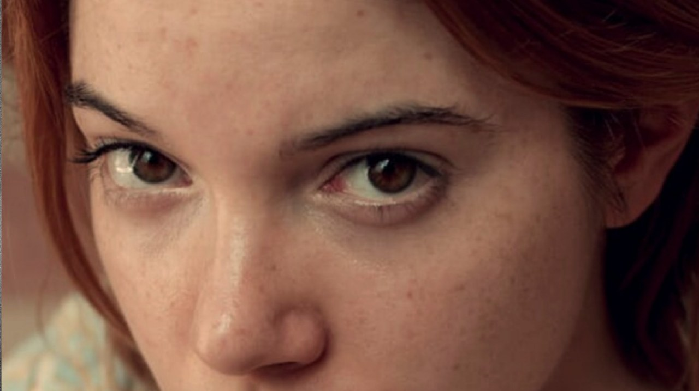

Bonus Track

Mano a mano
En este episodio nos adentramos en el universo audiovisual de Vera y el placer de los otros, la galardonada película dirigida por los cineastas rosarinos Romina Tamburello y Federico Actis.
Conversamos sobre el proceso de construcción de esta comedia dramática filmada íntegramente en Rosario y producida por Pez Cine, que explora la sexualidad juvenil, la curiosidad y el deseo sin prejuicios. Conocé cómo fue el recorrido internacional que llevó a esta producción santafesina desde el Festival de Tallin en Estonia hasta ganar Mejor Dirección en Mar del Plata y el Premio de la Crítica en Barcelona.
Mirá la entrevista completa para descubrir las miradas, vivencias y secretos detrás de uno de los hitos más destacados del cine local reciente.
 MÚSICA
MÚSICA TEATRO
TEATRO DEPORTE
DEPORTE